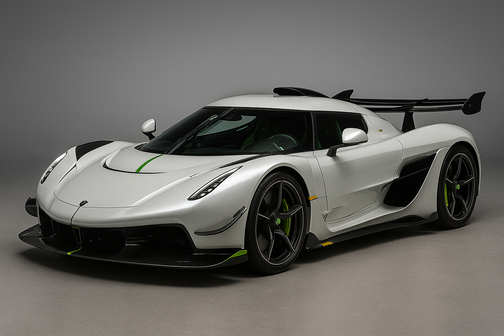

Koenigsegg Jesko
Datos interesantes
El Jesko fue creado para superar los 500 km/h. Su motor V8 biturbo alcanza los 1,600 hp. Utiliza la innovadora transmisión Light Speed.
Características
- Motor V8 Biturbo
- 1,600 hp con biocombustible
- Transmisión LST
- Aerodinámica de pista
Logros
- Tecnología sueca avanzada
- Supera los 500 km/h
- Fibra de carbono ultraligera
- Producción limitada